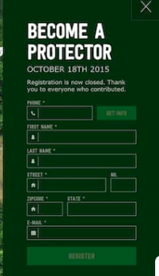
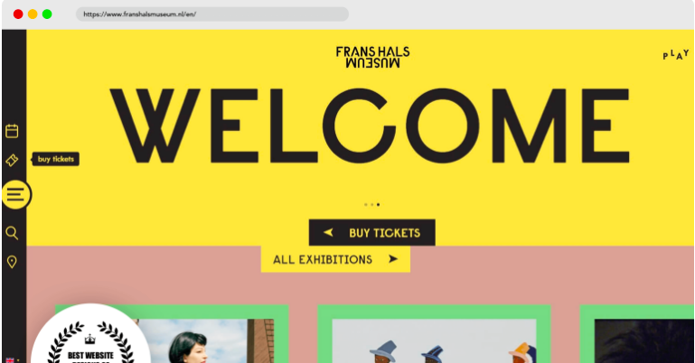
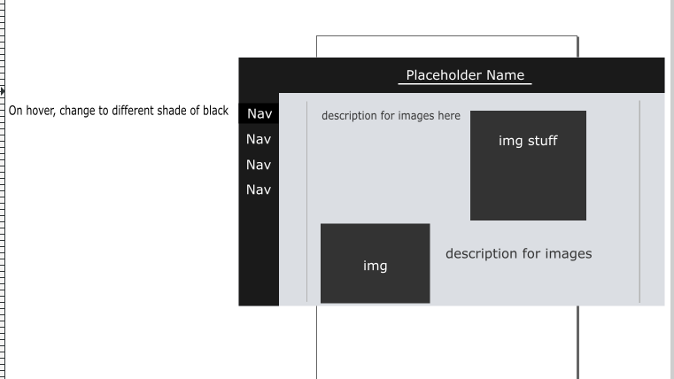

Project Summary
The purpose of this redesign is to make the UI of the project look better in terms of design. In terms of which project I will be choosing to redesign, I am not sure yet, but the plan is to overall the UI, do the following:
-
Make it responsive for different resolutions
-
Utilize animations with different graphics to make things more alive
-
Come up with a better layout
-
etc.
I do not know if I will be able to overhaul and add all these ideas, but I will do my best to implement them all.
Comparison Project 1

The image being displayed is from one of the "top website designs of 2021" I found on google. I am specifically looking at the form because the rest of the design for the website is just an image with a green theme and the form color scheme was set to match that theme.
I chose this because I remember my design for my madlibs form was pretty bad. This design however blends really well with the images provided in the rest of the website and provides icons to make the form look better.
The only thing it could improve is to remove all the asterisk for the required fields, and simply put an "(Optional)" point because a lot of the fields are required in this case.
Comparison Project 2
This image is another image from the top website designs website I was looking at. I think the website looks really clean and I chose this image because it really depicts what I'm going for. A clean design that does not rely on images created through other programs to make the website look good. The main UI design of this website could be created through pure HMTL/CSS, which is what I'm aiming to do.
I also really like the navigation bar that is set to the side, and was actually what I planned on doing to this briefing before realizing that it's simply just a design website.

Project Goals
For the final project, I'm looking to redo the design of one of my previous studio projects to make it look a lot better. Throughout this class, I've been able to learn new techniques that manipulate HTML/CSS to do cool things, but I lacked the creativity to convert that
knowledge into something that I think is cool. I'm looking to take this extra time for the finals project to make a better design that I am satisfied with.
Design Strategies
The visuals for the project will probably remain in the lighter side, probably something simply with white and some other color. I'll mainly be utilizing a different nav bar for the project. The colors are not final, but the layout of the UI will look something like this:

Interaction Strategies
The updated ui will feature a lot of visual feedback to the user. For example, when you hover on the navigation bar, it'll highlight or do some visual effect. For details on the page, I might make it so an entire section is highlighted or zoomed in when you hover over it. Again, not really sure because I haven't decided which project to choose yet, but I'm leaning towards redoing the images project.
Experience Goals
I guess the main plan is to just make the designs better. I am hoping to be able to come up with a better design now that we have more time to think about it.